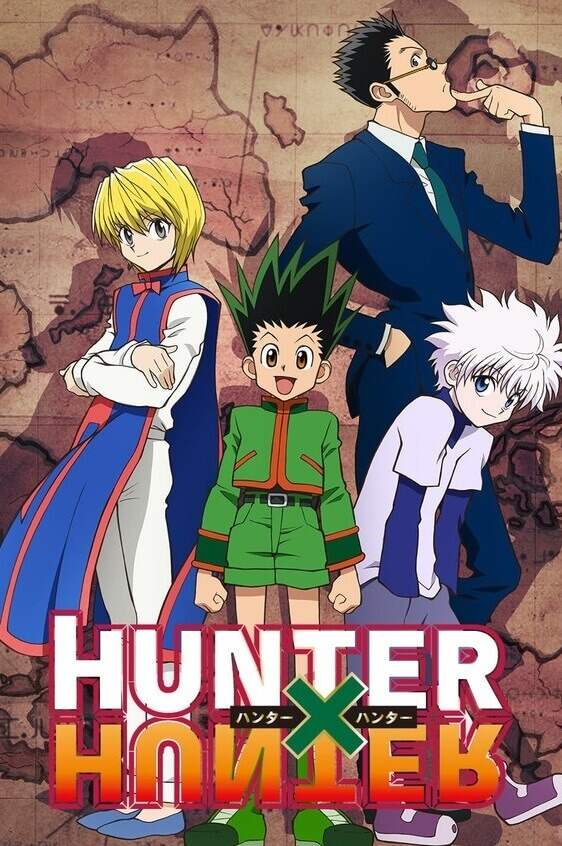
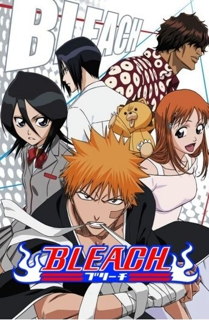
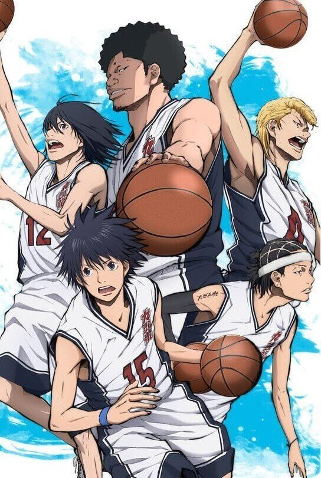
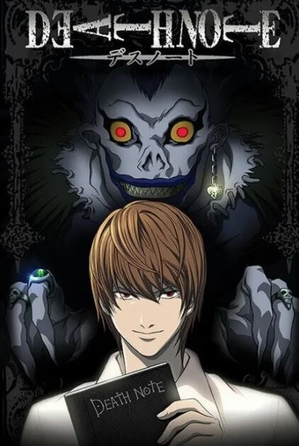
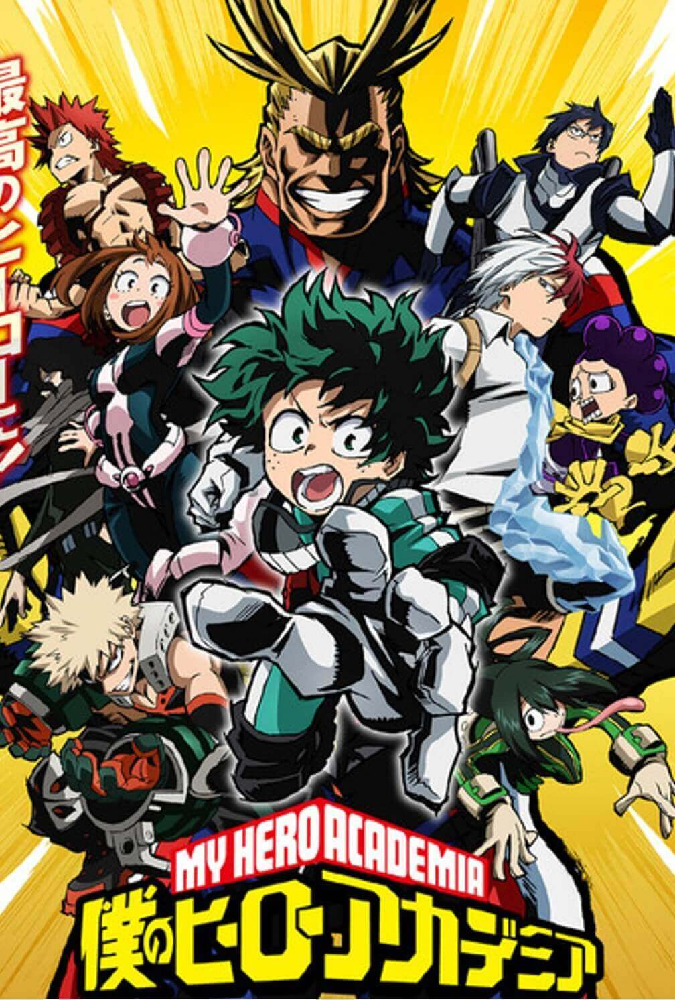

Anime
Anime
One Piece
Acción | Aventuras | Comedias
Una historia épica de piratas, donde narra la historia de "Monkey D. Luffy"
quien cuado tenia 7 años, comió accidentalmente una "Akuma no mi"(Futa del diablo)
la cual le dio poderes de goma. Por otra parte "Gol D. Roger" conocido como
"El rey de los Piratas" quien fuera ejecutado por la Marine, habló antes de
morir, acerca de su famoso tesoro "One Piece" escondido en la "Gran line".
Esta noticia desato la gran era de la piratas lanzando a incontables piratas
a ese lugar, en busca de "One Piece" el tesoro perdido. Diez años después,
Luffy inspirado en "Gol D. Roger" y un pirata de nombre Akagami no Shanks
(Shanks el pelirrojo) se convierte en pirata deseando ser el próximo
"Rey de los Piratas" y zarpar para conocer amigos y tener aventuras con ellos,
teniendo como meta encontrar el "One Piece".
Hunter x Hunter
Acción | Aventuras | Shounen 
La serie fue animada en 1999 con un total de sesenta y dos episodios emitidos.
Años mas tardes, en julio del 2011, se confirmo que el estudio Madhouse iba a producir
una nueva adaptación del anime. Sin embargo, se opto por animar toda la historia desde cero.
El anime trata de Gon Frecks,un niño de 12 años, quien vive con su tia Mito y su abuela en Isla Ballena, huérfano de madre y según su tía también de padre. Un día Gon es atacado por un oso del bosque, pero es salvado por un cazador quien le explica que está en busca de su maestro para así convertirse en un cazador, el es quien le dice que su padre Gin esta vivo. Enterado de esto Gon decide convertirse en cazador para poder encontrar a su padre.
El anime trata de Gon Frecks,un niño de 12 años, quien vive con su tia Mito y su abuela en Isla Ballena, huérfano de madre y según su tía también de padre. Un día Gon es atacado por un oso del bosque, pero es salvado por un cazador quien le explica que está en busca de su maestro para así convertirse en un cazador, el es quien le dice que su padre Gin esta vivo. Enterado de esto Gon decide convertirse en cazador para poder encontrar a su padre.
Bleach
Acción | Aventuras | Comedias 
Kurosaki Ichigo es un estudiante de instituto de 15 años, que tiene una
peculiaridad: es capaz de ver, oír y hablar con fantasmas. Pero no sabe
hasta dónde puede abarcar la clasificación de espíritus, ni lo que
conlleva el saberlo. Un buen día, una extraña chica de pequeña estatura
que viste ropas negras de samurai entra en su cuarto. Se llama Rukia
Kuchiki, y es una Shinigami (Dios de la Muerte). Ante la incredulidad de
Ichigo, le explica que su trabajo es mandar a las almas buenas o plus a
un lugar llamado la Sociedad de Almas, y eliminar a las almas malignas
o hollows. Luego junto a Inoue Orihime, Ishida Ury y Sado Yasutora se
veran envueltos en diferentes batallas, las cuales iran desarrollando
sus diferentes habilidades que le otorgaran a cada uno su importancia
en la serie.
Ahiru no Sora
Deportes | Drama | Comedia 
Sora Kurumatani, robusto, débil pero muy apasionado, ingresa a la
preparatoria Kuzuryuu con la esperanza de cumplir los deseos de su
madre de dominar su primer torneo de preparatoria. Sin embargo, el club
de baloncesto, convertido en guarida para delincuentes, ¡hace todo menos
jugar al baloncesto! Los miembros de su club, Momoharu Hanazono,
un hábil bloqueador que puede hacer saltos de poder pero es horrible
disparando, y su hermano gemelo Chiaki, un talentoso armador,
también ha perdido interés en el deporte. Con solo un juego abrumado por
la adrenalina y la emoción, y el amor puro de Sora por el juego, el
espíritu juvenil del baloncesto se reaviva.
Death Note
Suspenso |Policía| Psicológico 
Light Yagami es un excelente estudiante japonés que ha tenido una vida
aburrida. Esto cambia radicalmente cuando encuentra tirado en el suelo un
cuaderno conocido como Death Note (Libreta de la Muerte), un cuaderno
perdido por Ryuk, un Shinigami (Dios de la muerte). Cualquier humano
cuyo nombre esté escrito en el cuaderno morirá, y ahora Light ha decidido
utilizar este poder para crear un mundo perfecto sin criminales.
Pero cuando los criminales comienzan a morir de forma masiva,
las autoridades envían al legendario detective L en busca del asesino.
Con L pisándole los talones, Podrá mantener Light su noble propósito
incluso arriesgando su vida.
Demon Slayer
Acción |Demonios| Sobrenatural
La adaptación animada del manga Kimetsu no Yaiba (Demon Slayer) corre a cargo
del estudio de animación Ufotable.
El anima transcurre en la era Taisho de Japón. Kamado Tanjiro, un chico joven, bastante inteligente y con un corazón que no le abe en el pecho, se gana la vida vendiendo carbón. Descubre un día que su familia ha sido asesinada por un demonio. Para empeorar las cosas, su hermana menor Nezuko, la única superviviente de la masacre, ha sufrido una transformación en demonio. Destrozado por los acontecimientos Tanjiro decide convertirse en un cazador de demonios para poder devolver a su hermana a la normalidad y matar al demonio que masacró a su familia.
El anima transcurre en la era Taisho de Japón. Kamado Tanjiro, un chico joven, bastante inteligente y con un corazón que no le abe en el pecho, se gana la vida vendiendo carbón. Descubre un día que su familia ha sido asesinada por un demonio. Para empeorar las cosas, su hermana menor Nezuko, la única superviviente de la masacre, ha sufrido una transformación en demonio. Destrozado por los acontecimientos Tanjiro decide convertirse en un cazador de demonios para poder devolver a su hermana a la normalidad y matar al demonio que masacró a su familia.
Jujutsu Kaisen
Acción |Demonios| Sobrenatural
Yuuji Itadori es un estudiante de instituto con unas habilidades físicas
excepcionales. Todos los días, como rutina, va al hospital a visitar a su
abuelo enfermo y decide apuntarse al club de ocultismo del instituto
para no dar un palo al agua…
Sin embargo, un buen día el sello del talismán que se hallaba escondido en su instituto se rompe, y comienzan a aparecer unos monstruos.
Ante este giro de los acontecimientos, Itadori decide adentrarse en el instituto para salvar a sus compañeros. ¿Qué le deparará el destino?
Sin embargo, un buen día el sello del talismán que se hallaba escondido en su instituto se rompe, y comienzan a aparecer unos monstruos.
Ante este giro de los acontecimientos, Itadori decide adentrarse en el instituto para salvar a sus compañeros. ¿Qué le deparará el destino?
Shingeki no Kyojin
Acción | Drama | Superpoderes
"Ataque a los Titanes" se ambienta hace varios cientos de años cuando los humanos fueron casi
exterminados por los titanes.
Un pequeño porcentaje de la humanidad consigue sobrevivir amurallando a sí mismos en una ciudad protegida
por las murallas más altas que el más grande de los titanes.
En el presente, la ciudad no ha visto a ningún titán en más de 100 años. Pero Eren y su hermana adoptiva Mikasa presencian algo horrible: las murallas de la ciudad son destruidas por un titán colosal que aparece de la nada. No pasará mucho tiempo hasta que los gigantes entran por el hueco abierto en el muro y comienzan a devorar a la gente.
En el presente, la ciudad no ha visto a ningún titán en más de 100 años. Pero Eren y su hermana adoptiva Mikasa presencian algo horrible: las murallas de la ciudad son destruidas por un titán colosal que aparece de la nada. No pasará mucho tiempo hasta que los gigantes entran por el hueco abierto en el muro y comienzan a devorar a la gente.
Boku no Hero
Acción |Fantasía| Superpoderes 
Boku no Hero - My Hero Academia transcurre en un mundo en el cual los superpoderes
en las personas son vistos con normalidad. El contexto trajo una nueva profesion, la de Héroe.
El anime se basara en la vida de Izuku Midoriya, un joven aspirante a héroe.
Las personas no nacen igual. El protagonista de esta historia es uno de esos casos raros que nacen sin superpoderes, pero esto no le impedirá perseguir su sueño: ser un gran héroe como el legendario All-Might. Para convertirse en el héroe que quiere ser, se apuntará a una de las academias de héroes más prestigiosas del país: Yueiko. Con la ayuda de su ídolo, All-Might, ¿podrá convertirse en un verdadero héroe?
Las personas no nacen igual. El protagonista de esta historia es uno de esos casos raros que nacen sin superpoderes, pero esto no le impedirá perseguir su sueño: ser un gran héroe como el legendario All-Might. Para convertirse en el héroe que quiere ser, se apuntará a una de las academias de héroes más prestigiosas del país: Yueiko. Con la ayuda de su ídolo, All-Might, ¿podrá convertirse en un verdadero héroe?
One Punch Man
Acción | Comedias | Parodia
Surge en un contexto en el cual abundan los héroes que luchan contra el mal.
La serie está protagonizada por Saitama, un joven de 25 años que comenzó a hacer de héroe por pura afición, y tras tres años de un durísimo entrenamiento consiguió tal nivel de fuerza que puede
acabar con cualquier enemigo de un solo puñetazo.
El joven vive en Ciudad Z, una zona que continuamente está siendo invadida por monstruos. Aspiraba a volverse fuerte para poder disfrutar varias batallas contra los monstruos que se presentaran. Ahora la vida emocionante que esperaba tener se ha convertido en una de tedio absoluto, pero ¿habrá alguien a su nivel entre todos los héroes del mundo? ¿Y un villano capaz de hacerle sombra?
El joven vive en Ciudad Z, una zona que continuamente está siendo invadida por monstruos. Aspiraba a volverse fuerte para poder disfrutar varias batallas contra los monstruos que se presentaran. Ahora la vida emocionante que esperaba tener se ha convertido en una de tedio absoluto, pero ¿habrá alguien a su nivel entre todos los héroes del mundo? ¿Y un villano capaz de hacerle sombra?